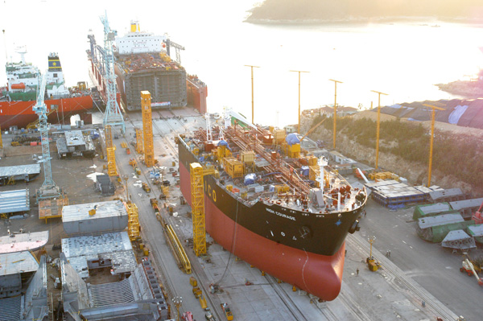

home>기술개발>신공법
신공법
- 신제품 개발에 앞장서겠습니다.
- 세계 경제의 침체 및 저유가 기조가 향후 몇 년간 지속될 것이라는 전망이 우세함에 따라 사업역량 강화를 위한 제품 성능의 차별화 및 원가경쟁력 확보에 초점을 맞춰 기술개발 활동을 추진하고 있습니다
-
DEVELOPED
-
2022

공법 최적화
-

- One-time Setting 생산기술
- 블록의 탑재공법이 메가블록→기가블록→테라블록 공법으로 점차 발전함에 따라 탑재 블록이 대형화되고 그 형상 또한 복잡해져 조립 난이도가 급격히 증가하였으며 이로 인한 치수품질의 저하 및 생산성 감소 문제를 해결하기 위해 대형블록의 안정적 치수품질을 확보할 수 있는 One-Time Setting 생산기술을 확보하였습니다.
- 해양플랜트용 대형블록에 적용함으로써 시스템 기반의 치수품질 확보 및 안정적인 대형블록 생산체제 구축으로 세계 최고수준의 조립 생산성을 실현하였습니다.
-
- 듀얼 리프팅(Dual Lifting) 공법
- 8,000톤급과 3,600톤급 해상크레인 2대를 결합하여 단일 해상크레인처럼 동시에 조작할 수 있는 듀얼 리프팅(Dual Lifting) 공법을 개발하여 11,600톤급 테라 블록을 인양, 이동, 탑재할 수 있는 세계 최대의 제작, 인양 능력을 확보하였습니다.
- 해양플랜트의 대형 구조물에 적용하여 블록 제작 기간 및 탑재 비용을 절감하였고 연동 시스템을 적용해 안전성과 효율성을 극대화하였습니다.
-
- 3D 스캔 기반 CFT/Lashing 시뮬레이션
- 컨테이너의 기능 검사(CFT, Container Function Test)와 고박 검사 (Lashing Test)를 위한 기존의 목업지그 방식은 실물과 동일한 컨테이너를 사용해 많은 인력과 시간이 투입되며, 크레인을 사용하는 다른 공정에 영향을 미쳤습니다.
- 이를 개선하기 위해 삼성중공업에서는 3D스캔 기반의 CFT 시뮬레이션 시스템과 Lashing 시뮬레이션 시스템을 개발해 적용했습니다.
자동화
-
- 배관 용접·검사 자동화
- 크고 두꺼운 배관을 효율적으로 용접할 수 있는 공법을 개발하여 생산성을 향상시켰습니다. Hot-Wire TIG 오비탈 용접공법은 기존 보다 3배 이상, FCAW 오비탈 용접공법은 기존보다 6배 이상 용접속도가 향상되었습니다.
- 또한, 배관 내부를 주행하며 용접 후 배관을 청소·검사 할 수 있는 장비를 개발하였으며 세계 최초로 배관 내부 방사선 검사를 수행하여 방사선 검사 시간과 피폭시간을 대폭 단축시켰습니다.
-
- 배관 오비탈 용접장비
- 해양플랜트 제작에서 품질에 가장 큰 영향을 주는 공정은 배관용접 이음부입니다. 기존에는 용접사 개개인의 역량에 따라 좌우됐던 배관용접 품질과 생산성을 획기적으로 개선하고자 삼성중공업은 동종업계 최초로 배관자동용접 공법을 도입했습니다.
- 이로 인해 용접불량률을 획기적으로 저감했고, 용접생산성 역시 큰 폭으로 향상시켰습니다.
스마트 야드
-
- Drawingless Yard(3D 도면)
- 제작처에서 2D도면을 참조해 제작하던 기존 방식을 벗어나, 3D 모델로부터 직접 3차원 형상정보와 각종 제작, 가공정보를 추출 후 제작처로 전송함으로써 2D도면 없이 제작이 가능하도록 개발했습니다.
- 제작도뿐만 아니라 설치도까지 확장되면 도면 없는 Drawingless Yard가 구현됩니다.
-
- Digital Twin(SEVAS, 모바일)
- 3D 경량모델을 활용해 공정진도를 직관적으로 이해하고, 태블릿을 활용해 야드전용 산업용 초고속 무선망(P-LTE) 기반으로 최신도면 및 3D 모델을 생산 부문에 전달함과 동시에 실시간 실적입력을 가능하게 해 4차 산업혁명 기술 중 Digital Twin 기술을 선도하고 있습니다.